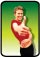

Amici.net
Una nuova amicizia online
Registration for an e-pal
Fill in the form in italiano with your details. Give as much detail as you can in the hobby and the commenti sections to help you find a suitable match.

Refer to Come si dice? – I segni dello zodiaco to find the signs of the zodiac in Italian.
There are two emails and two voice messages in response to the e-pal advertisement.
Che bello! What do the responses say?
Saluti dall’Italia!
Bello no, l’e-mail! Possiamo parlare con tutto il mondo. Ci sono molti italiani in Australia? Sei d’origine italiana? Hai un koala o un canguro?
Sono Davide, 17enne di Roma. Amo il calcio, la formula uno (viva la Ferrari), lo sci e le belle ragazze. Sono un tipo assai sportivo e socievole. Ti ho mandato una foto.
{kind=link}
Il fine settimana mi piace andare alla partita di calcio, specialmente se gioca la Roma. Il calcio è popolare in Australia? Di solito esco in motorino con i miei amici. Spesso ci incontriamo con gli amici in centro, in pizzeria, dipende che tempo fa. Veramente non mi piacciono gli hamburger di McDonald’s ma mi piacciono le patatine fritte!
Spero di sentirti presto!
Davide

Ciao, sono Chiara.
Ho 17 anni e sono italiana ma attualmente abito in Francia dove mio padre lavora per l’Alitalia (la compagnia aerea italiana).
Adoro la musica e, quando posso, sto dalla mattina alla sera attaccata al mio lettore mp3 portatile o alla radio. Quando non ascolto la musica, frequento la scuola o lavoro in un pub per qualche ora il weekend. Nel tempo libero mi piace uscire con gli amici e divertirmi. Mi piace tanto ballare, fare aerobica e partecipare ai concerti dal vivo. Amo anche fare lunghe passeggiate in montagna.
Che tipo sono? Gli amici dicono che sono simpatica. Sono estroversa e socievole. Sono un vero sagittario (il mio compleanno è il 28 novembre)! Mi piace l’avventura e viaggiare. Sono stata in Inghilterra, in Africa e ovviamente in Francia ma non sono mai stata in Australia. Alla tivù c’era un documentario sull’Australia. Sembra un paese bellissimo! Le spiagge, lo spazio! Un giorno vorrei visitarla!
Salutoni
Chiara
(Katia)
(Cristiano)
Who would you like to respond to? Who do you have most in common with? Once you’ve made your selection, answer the following questions justifying your choice.
Write your answers first in Italian using full sentences.
Then try practising your answers out loud. If you have recording facilities, record your answers and listen to yourself.
- A quale persona vuoi scrivere?
- Perché ti piace questa persona?
- Dove abita questa persona?
- Che tipo di persona è ... (nome della persona)?
- Quanti anni ha ... (nome)?
- Perché non hai scelto ... (nome di un’altra persona)?
- Cosa avete in comune?
Click here to listen to a sample answer of a similar task.
Write a response to the e-pal you have chosen.
Introduce yourself and provide as much relevant information as possible. Take into account the information provided by the person and the questions asked by the teenager in the email.
You may wish to present your response as an email, a slide show presentation, a voice message or any other suitable mode of your choice.
Riflessione
Take a few minutes to think about what has been covered in Amici.net.
Make some notes in English about your learning techniques in the spaces provided.
- What strategies did you use to learn vocabulary and linguistic points?
- How did you structure your personal notes for new words and language points?
- What do you think you did well?
- What will you need to change about your study techniques?